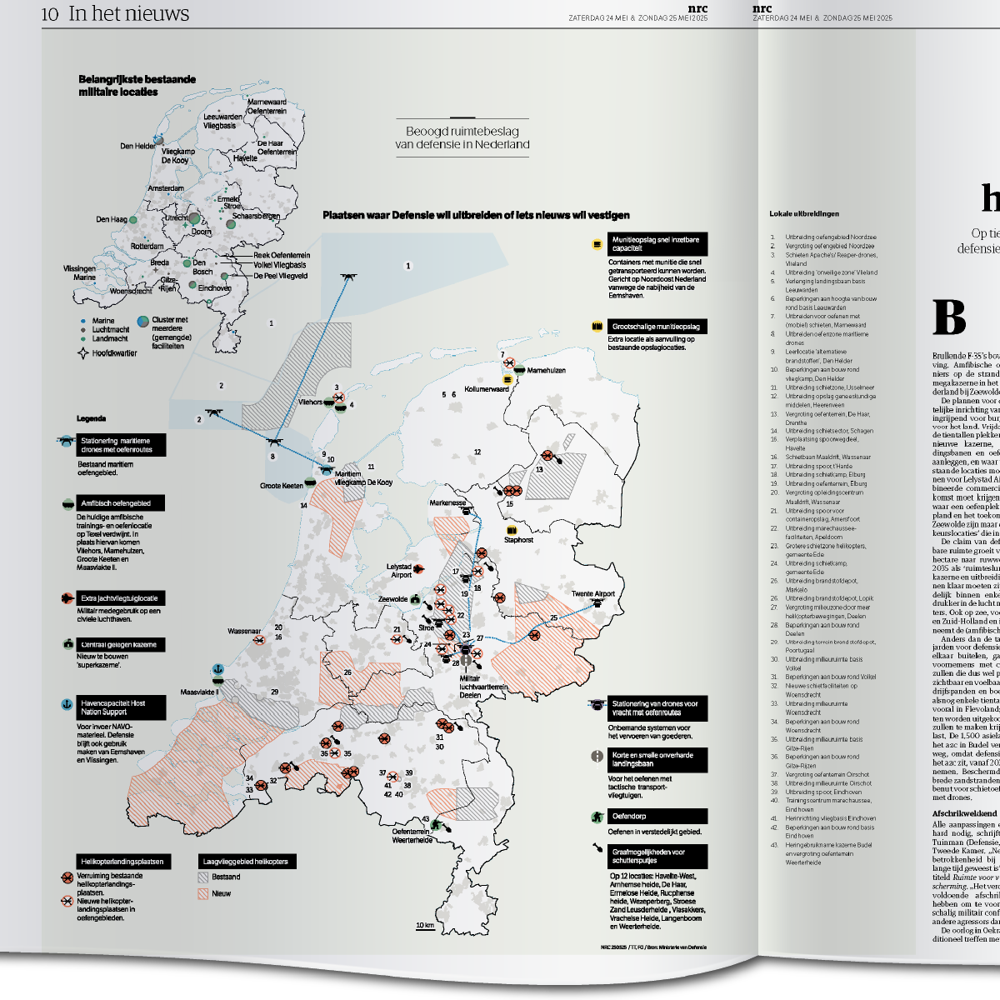
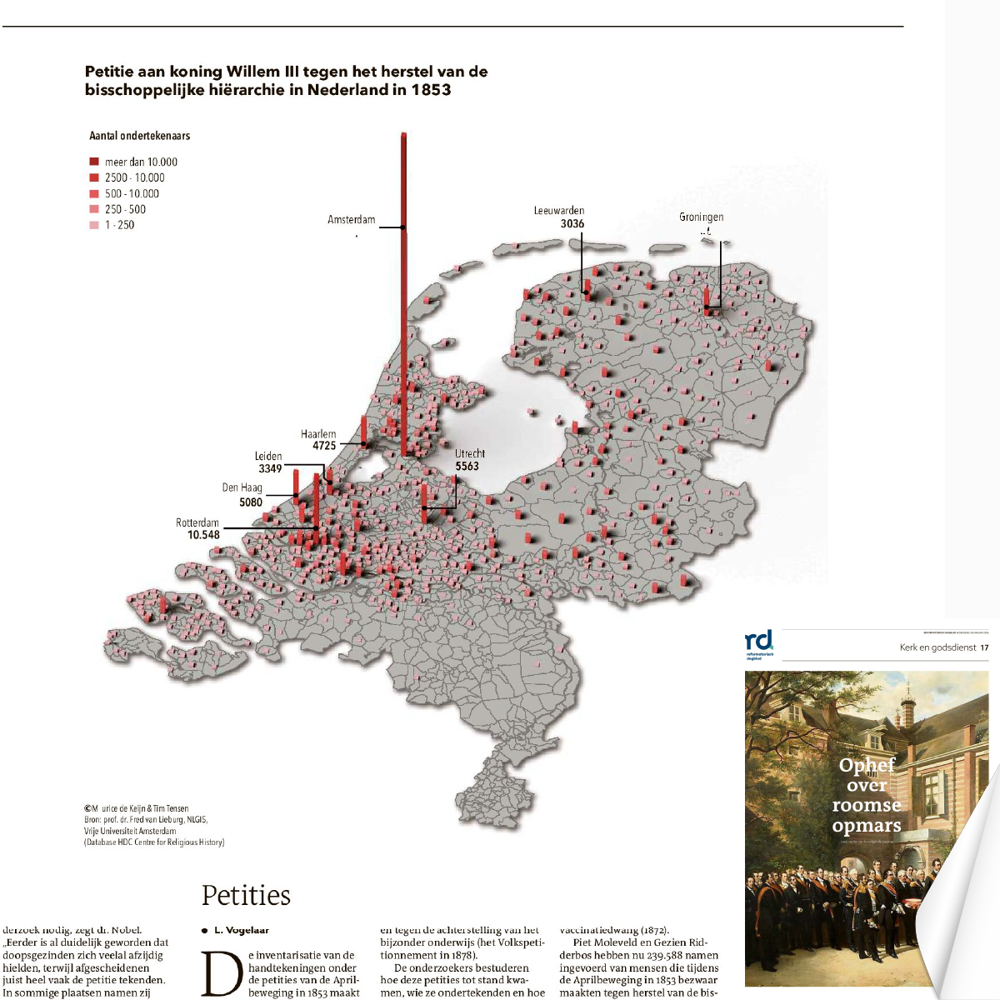

Overige projecten
Selectie grafieken en infographics
Ze zjin nog nergens gebouwd in het westen, maar kleine kerncentrales winnen aan interesse. Ik bracht in beeld welke varianten er op dit moment bestaan.
Grafieken
Ruimtelijke plannen Defensie
In mei 2025 maakte het kabinet de tientallen plekken bekend waar het een nieuwe kazerne, munitiedepots, landingsbanen en oefenplaatsen wil laten aanleggen, en waar uitbreidingen van bestaande locaties moeten komen. Ik maakte voor NRC deze plannen inzichtelijk op kaart.

Kaart met Defensie plannen, gepubliceerd in NRC
Animatie van de Defensie plannen
Protestants Nederland in verzet
Deze keer een duik in de geschiedenis. Namelijk een landelijke protetantse petitie tegen de invloed van de Katholieke kerk in 1853. Ik visualiseerde de aantallen petities op gemeenteniveau van toen voor het Reformatorisch Dagblad.

3D visualisatie van het aantal ingediende petitities door de protestanten in 1853. De hoogte laat de verschillen tussen de steden goed zien